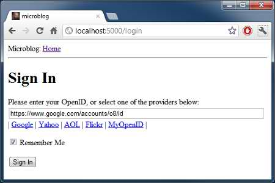

2012-05-13T06:26:42Z
The Flask Mega-Tutorial, Part III: Web Forms
This is the third article in the series in which I document my experience writing web applications in Python using the Flask microframework.
The goal of the tutorial series is to develop a decently featured microblogging application that demonstrating total lack of originality I have decided to call microblog.
NOTE: This article was revised in September 2014 to be in sync with current versions of Python and Flask.
Here is an index of all the articles in the series that have been published to date:
- Part I: Hello, World!
- Part II: Templates
- Part III: Web Forms (this article)
- Part IV: Database
- Part V: User Logins
- Part VI: Profile Page And Avatars
- Part VII: Unit Testing
- Part VIII: Followers, Contacts And Friends
- Part IX: Pagination
- Part X: Full Text Search
- Part XI: Email Support
- Part XII: Facelift
- Part XIII: Dates and Times
- Part XIV: I18n and L10n
- Part XV: Ajax
- Part XVI: Debugging, Testing and Profiling
- Part XVII: Deployment on Linux (even on the Raspberry Pi!)
- Part XVIII: Deployment on the Heroku Cloud
Recap
In the previous chapter of the series we defined a simple template for the home page and used fake objects as placeholders for things we don't have yet, like users or blog posts.
In this article we are going to fill one of those many holes we still have in our app, we will be looking at how to work with web forms.
Web forms are one of the most basic building blocks in any web application. We will be using forms to allow users to write blog posts, and also for logging in to the application.
To follow this chapter along you need to have the microblog app as we left it at the end of the previous chapter. Please make sure the app is installed and running.
Configuration
To handle our web forms we are going to use the Flask-WTF extension, which in turn wraps the WTForms project in a way that integrates nicely with Flask apps.
Many Flask extensions require some amount of configuration, so we are going to setup a configuration file inside our root microblog folder so that it is easily accessible if it needs to be edited. Here is what we will start with (file config.py):
WTF_CSRF_ENABLED = True
SECRET_KEY = 'you-will-never-guess'
Pretty simple, it's just two settings that our Flask-WTF extension needs. The WTF_CSRF_ENABLED setting activates the cross-site request forgery prevention (note that this setting is enabled by default in current versions of Flask-WTF). In most cases you want to have this option enabled as it makes your app more secure.
The SECRET_KEY setting is only needed when CSRF is enabled, and is used to create a cryptographic token that is used to validate a form. When you write your own apps make sure to set the secret key to something that is difficult to guess.
Now that we have our config file we need to tell Flask to read it and use it. We can do this right after the Flask app object is created, as follows (file app/__init__.py):
from flask import Flask
app = Flask(__name__)
app.config.from_object('config')
from app import views
The user login form
Web forms are represented in Flask-WTF as classes, subclassed from base class Form. A form subclass simply defines the fields of the form as class variables.
Now we will create a login form that users will use to identify with the system. The login mechanism that we will support in our app is not the standard username/password type, we will have our users login using their OpenID. OpenIDs have the benefit that the authentication is done by the provider of the OpenID, so we don't have to validate passwords, which makes our site more secure to our users.
The OpenID login only requires one string, the so called OpenID. We will also throw a 'remember me' checkbox in the form, so that users can choose to have a cookie installed in their browsers that remembers their login when they come back.
Let's write our first form (file app/forms.py):
from flask.ext.wtf import Form
from wtforms import StringField, BooleanField
from wtforms.validators import DataRequired
class LoginForm(Form):
openid = StringField('openid', validators=[DataRequired()])
remember_me = BooleanField('remember_me', default=False)
I believe the class is pretty much self-explanatory. We imported the Form class, and the two form field classes that we need, StringField and BooleanField.
The DataRequired import is a validator, a function that can be attached to a field to perform validation on the data submitted by the user. The DataRequired validator simply checks that the field is not submitted empty. There are many more validators included with Flask-WTF, we will use some more in the future.
Form templates
We will also need a template that contains the HTML that produces the form. The good news is that the LoginForm class that we just created knows how to render form fields as HTML, so we just need to concentrate on the layout. Here is our login template (file app/templates/login.html):
<!-- extend from base layout -->
{% extends "base.html" %}
{% block content %}
<h1>Sign In</h1>
<form action="" method="post" name="login">
{{ form.hidden_tag() }}
<p>
Please enter your OpenID:<br>
{{ form.openid(size=80) }}<br>
</p>
<p>{{ form.remember_me }} Remember Me</p>
<p><input type="submit" value="Sign In"></p>
</form>
{% endblock %}
Note that in this template we are reusing the base.html template through the extends template inheritance statement. We will actually do this with all our templates, to ensure a consistent layout across all pages.
There are a few interesting differences between a regular HTML form and our template. This template expects a form object instantiated from the form class we just defined stored in a template argument named form. We will take care of sending this template argument to the template next, when we write the view function that renders this template.
The form.hidden_tag() template argument will get replaced with a hidden field that implements the CSRF prevention that we enabled in the configuration. This field needs to be in all your forms if you have CSRF enabled. The good news is that Flask-WTF handles it for us, we just need to make sure it is included in the form.
The actual fields of our form are rendered by the field objects, we just need to refer to a {{form.field_name}} template argument in the place where each field should be inserted. Some fields can take arguments. In our case, we are asking the text field to generate our openid field with a width of 80 characters.
Since we have not defined the submit button in the form class we have to define it as a regular field. The submit field does not carry any data so it doesn't need to be defined in the form class.
Form views
The final step before we can see our form is to code a view function that renders the template.
This is actually quite simple since we just need to pass a form object to the template. Here is our new view function (file app/views.py):
from flask import render_template, flash, redirect
from app import app
from .forms import LoginForm
# index view function suppressed for brevity
@app.route('/login', methods=['GET', 'POST'])
def login():
form = LoginForm()
return render_template('login.html',
title='Sign In',
form=form)
So basically, we have imported our LoginForm class, instantiated an object from it, and sent it down to the template. This is all that is required to get form fields rendered.
Let's ignore for now the flash and redirect imports. We'll use them a bit later.
The only other thing that is new here is the methods argument in the route decorator. This tells Flask that this view function accepts GET and POST requests. Without this the view will only accept GET requests. We will want to receive the POST requests, these are the ones that will bring in the form data entered by the user.
At this point you can try the app and see the form in your web browser. After you start the application you will want to open http://localhost:5000/login in your web browser, as this is the route we have associated with the login view function.
We have not coded the part that accepts data yet, so pressing the submit button will not have any effect at this time.
Receiving form data
Another area where Flask-WTF makes our job really easy is in the handling of the submitted form data. Here is an updated version of our login view function that validates and stores the form data (file app/views.py):
@app.route('/login', methods=['GET', 'POST'])
def login():
form = LoginForm()
if form.validate_on_submit():
flash('Login requested for OpenID="%s", remember_me=%s' %
(form.openid.data, str(form.remember_me.data)))
return redirect('/index')
return render_template('login.html',
title='Sign In',
form=form)
The validate_on_submit method does all the form processing work. If you call it when the form is being presented to the user (i.e. before the user got a chance to enter data on it) then it will return False, so in that case you know that you have to render the template.
When validate_on_submit is called as part of a form submission request, it will gather all the data, run all the validators attached to fields, and if everything is all right it will return True, indicating that the data is valid and can be processed. This is your indication that this data is safe to incorporate into the application.
If at least one field fails validation then the function will return False and that will cause the form to be rendered back to the user, and this will give the user a chance to correct any mistakes. We will see later how to show an error message when validation fails.
When validate_on_submit returns True our login view function calls two new functions, imported from Flask. The flash function is a quick way to show a message on the next page presented to the user. In this case we will use it for debugging, since we don't have all the infrastructure necessary to log in users yet, we will instead just display a message that shows the submitted data. The flash function is also extremely useful on production servers to provide feedback to the user regarding an action.
The flashed messages will not appear automatically in our page, our templates need to display the messages in a way that works for the site layout. We will add these messages to the base template, so that all our templates inherit this functionality. This is the updated base template (file app/templates/base.html):
<html>
<head>
{% if title %}
<title>{{ title }} - microblog</title>
{% else %}
<title>microblog</title>
{% endif %}
</head>
<body>
<div>Microblog: <a href="/index">Home</a></div>
<hr>
{% with messages = get_flashed_messages() %}
{% if messages %}
<ul>
{% for message in messages %}
<li>{{ message }} </li>
{% endfor %}
</ul>
{% endif %}
{% endwith %}
{% block content %}{% endblock %}
</body>
</html>
The technique to display the flashed message is hopefully self-explanatory. One interesting property of flash messages is that once they are requested through the get_flashed_messages function they are removed from the message list, so these messages appear in the first page requested by the user after the flash function is called, and then they disappear.
The other new function we used in our login view is redirect. This function tells the client web browser to navigate to a different page instead of the one requested. In our view function we use it to redirect to the index page we developed in previous chapters. Note that flashed messages will display even if a view function ends in a redirect.
This is a great time to start the app and test how the form works. Make sure you try submitting the form with the openid field empty, to see how the DataRequired validator halts the submission process.
Improving field validation
With the app in its current state, forms that are submitted with invalid data will not be accepted. Instead, the form will be presented back to the user to correct. This is exactly what we want.
What we are missing is an indication to the user of what is wrong with the form. Luckily, Flask-WTF also makes this an easy task.
When a field fails validation Flask-WTF adds a descriptive error message to the form object. These messages are available to the template, so we just need to add a bit of logic that renders them.
Here is our login template with field validation messages (file app/templates/login.html):
<!-- extend base layout -->
{% extends "base.html" %}
{% block content %}
<h1>Sign In</h1>
<form action="" method="post" name="login">
{{ form.hidden_tag() }}
<p>
Please enter your OpenID:<br>
{{ form.openid(size=80) }}<br>
{% for error in form.openid.errors %}
<span style="color: red;">[{{ error }}]</span>
{% endfor %}<br>
</p>
<p>{{ form.remember_me }} Remember Me</p>
<p><input type="submit" value="Sign In"></p>
</form>
{% endblock %}
The only change we've made is to add a for loop that renders any messages added by the validators below the openid field. As a general rule, any fields that have validators attached will have errors added under form.field_name.errors. In our case we use form.openid.errors. We display these messages in a red style to call the user's attention.
Dealing with OpenIDs
In practice, we will find that a lot of people don't even know that they already have a few OpenIDs. It isn't that well known that a number of major service providers on the Internet support OpenID authentication for their members. For example, if you have an account with Google, you have an OpenID with them. Likewise with Yahoo, AOL, Flickr and many other providers. (Update: Google is shutting down their OpenID service on April 15 2015).
To make it easier for users to login to our site with one of these commonly available OpenIDs, we will add links to a short list of them, so that the user does not have to type the OpenID by hand.
We will start by defining the list of OpenID providers that we want to present. We can do this in our config file (file config.py):
WTF_CSRF_ENABLED = True
SECRET_KEY = 'you-will-never-guess'
OPENID_PROVIDERS = [
{'name': 'Google', 'url': 'https://www.google.com/accounts/o8/id'},
{'name': 'Yahoo', 'url': 'https://me.yahoo.com'},
{'name': 'AOL', 'url': 'http://openid.aol.com/<username>'},
{'name': 'Flickr', 'url': 'http://www.flickr.com/<username>'},
{'name': 'MyOpenID', 'url': 'https://www.myopenid.com'}]
Now let's see how we use this array in our login view function:
@app.route('/login', methods=['GET', 'POST'])
def login():
form = LoginForm()
if form.validate_on_submit():
flash('Login requested for OpenID="%s", remember_me=%s' %
(form.openid.data, str(form.remember_me.data)))
return redirect('/index')
return render_template('login.html',
title='Sign In',
form=form,
providers=app.config['OPENID_PROVIDERS'])
Here we grab the configuration by looking it up in app.config with its key. The array is then added to the render_template call as a template argument.
As I'm sure you guessed, we have one more step to be done with this. We now need to specify how we would like to render these provider links in our login template (file app/templates/login.html):
<!-- extend base layout -->
{% extends "base.html" %}
{% block content %}
<script type="text/javascript">
function set_openid(openid, pr)
{
u = openid.search('<username>')
if (u != -1) {
// openid requires username
user = prompt('Enter your ' + pr + ' username:')
openid = openid.substr(0, u) + user
}
form = document.forms['login'];
form.elements['openid'].value = openid
}
</script>
<h1>Sign In</h1>
<form action="" method="post" name="login">
{{ form.hidden_tag() }}
<p>
Please enter your OpenID, or select one of the providers below:<br>
{{ form.openid(size=80) }}
{% for error in form.openid.errors %}
<span style="color: red;">[{{error}}]</span>
{% endfor %}<br>
|{% for pr in providers %}
<a href="javascript:set_openid('{{ pr.url }}', '{{ pr.name }}');">{{ pr.name }}</a> |
{% endfor %}
</p>
<p>{{ form.remember_me }} Remember Me</p>
<p><input type="submit" value="Sign In"></p>
</form>
{% endblock %}
The template got somewhat long with this change. Some OpenIDs include the user's username, so for those we have to have a bit of javascript magic that prompts the user for the username and then composes the OpenID with it. When the user clicks on an OpenID provider link and (optionally) enters the username, the OpenID for that provider is inserted in the text field.
Below is a screenshot of our login screen after clicking the Google OpenID link:

Final Words
While we have made a lot of progress with our login form, we haven't actually done anything to login users into our system, all we've done so far had to do with the GUI aspects of the login process. This is because before we can do real logins we need to have a database where we can record our users.
In the next chapter we will get our database up and running, and shortly after we will complete our login system, so stay tuned for the follow up articles.
The microblog application in its current state is available for download here:
Download microblog-0.3.zip.
Remember that the Flask virtual environment is not included in the zip file. For instructions on how to set it up see the first chapter of the series.
Feel free to leave comments or questions below. I hope to see you in the next chapter.
Miguel
#176 Minh Tuan said 2014-10-16T11:55:28Z
In the forms.py: from wtforms.validators import DataRequired should be: from wtforms.validators import Required and follow: openid = StringField('openid', validators=[Required()])
#177 Miguel Grinberg said 2014-10-16T14:18:25Z
@Minh: the Required name is deprecated and was replaced with DataRequired in the current version of wtforms.
#178 Sachitha Perera said 2014-10-24T09:17:01Z
when i edit the views as "from flask import render_template, flash, redirect from app import app from .forms import LoginForm # index view function suppressed for brevity @app.route('/login', methods=['GET', 'POST']) def login(): form = LoginForm() if form.validate_on_submit(): flash('Login requested for OpenID="%s"'% (form.openid.data)) return redirect('/index') return render_template('login.html', title='Sign In', form=form)" server was run perfectly.. but when i submit the form it thow type error: TypeError: __init__() takes at most 2 arguments (3 given) :(
#179 Miguel Grinberg said 2014-10-24T14:35:50Z
@Sachitha: without the complete stack trace of the error it is difficult to tell what's the problem.
#180 Vinod said 2014-11-06T23:02:45Z
Hi Miguel, Thanks for the wonderful tutorial. :) I am getting this error. Traceback (most recent call last): File "C:\Python27\lib\site-packages\flask-0.10.1-py2.7.egg\flask\app.py", line 1836, in __call__ return self.wsgi_app(environ, start_response) File "C:\Python27\lib\site-packages\flask-0.10.1-py2.7.egg\flask\app.py", line 1820, in wsgi_app response = self.make_response(self.handle_exception(e)) File "C:\Python27\lib\site-packages\flask-0.10.1-py2.7.egg\flask\app.py", line 1403, in handle_exception reraise(exc_type, exc_value, tb) File "C:\Python27\lib\site-packages\flask-0.10.1-py2.7.egg\flask\app.py", line 1817, in wsgi_app response = self.full_dispatch_request() File "C:\Python27\lib\site-packages\flask-0.10.1-py2.7.egg\flask\app.py", line 1477, in full_dispatch_request rv = self.handle_user_exception(e) File "C:\Python27\lib\site-packages\flask-0.10.1-py2.7.egg\flask\app.py", line 1381, in handle_user_exception reraise(exc_type, exc_value, tb) File "C:\Python27\lib\site-packages\flask-0.10.1-py2.7.egg\flask\app.py", line 1475, in full_dispatch_request rv = self.dispatch_request() File "C:\Python27\lib\site-packages\flask-0.10.1-py2.7.egg\flask\app.py", line 1461, in dispatch_request return self.view_functions[rule.endpoint](**req.view_args) File "C:\Flask-Workshop\app\views.py", line 38, in login providers=app.config['OPENID_PROVIDERS']) KeyError: 'OPENID_PROVIDERS' I think my code is similar to the one that you have posted. What could be the reason ?
#181 Miguel Grinberg said 2014-11-07T02:02:34Z
@Vinod: check your config.py file, look for the OPENID_PROVIDERS variable there. It's probably missing or misspelled. If that is not it, then make sure the following line is in app/__init__.py: app.config.from_object('config')
#182 roryneil said 2014-11-09T05:18:41Z
In the "Improving Field Validation" section, I always have the validation error, even before I submit my form. Any ideas?
#183 Miguel Grinberg said 2014-11-09T07:20:20Z
@roryneil: have you compared your source files with mine on Github?
#184 Deekshith said 2014-11-11T07:33:54Z
Hi Miguel, When I try to run the run.py file, the server doesn't work showing an error that it cannot import StringField from wtforms. Similar error occurs when importing DataRequired from wtforms.validators. But BooleanField gets imported without any error. Can you plz let me know where I'm doing wrong. Thanks
#185 Deekshith said 2014-11-11T09:05:49Z
Hi Miguel, I figured out the reason importing StringField from wtforms was givint out an error. It seems like StringField is substituted by TextField in the latest version. Even DataRequired class in wtforms.validators is replaced by Required.
#186 Miguel Grinberg said 2014-11-12T07:12:11Z
@Deekshith: you are probably using an old version of wtforms, make sure you have the latest one.
#187 Miguel Grinberg said 2014-11-12T07:22:50Z
@Deekshith: sorry, missed your second comment. You have it reversed, the new names are StringField, DataRequired and so on. You must be using an old wtforms version.
#188 Greg Silverman said 2014-11-15T19:39:57Z
Miguel, First of all, thanks a ton for making this work available to the general populace! Great stuff. Small correction: In your views.py under the Form Views section , you have "from .forms" - I believe this should be "from forms." Thanks again!
#189 Miguel Grinberg said 2014-11-16T18:36:56Z
@Greg: "from .forms" is correct. It is a relative import, forms will be imported from the same directory where the importing module is.
#190 Manuel Godoy said 2014-11-17T05:59:36Z
Hola Miguel, I don't think you'll get tired of reading this, but your blog is fantastic. I was wondering if you plan to include OAuth logins. I believe OpenIDs are getting deprecated. Thanks,
#191 Miguel Grinberg said 2014-11-17T07:00:29Z
@Manuel: funny that you ask, the article on OAuth is almost done, it's not part of this tutorial, but an independent article though.
#192 Don said 2014-11-25T11:59:36Z
Hi there. I'm having exactly the same problem as mentioned in comment #180. I'm trying to do this using Python 3.4 so I don't know if that has something to do with it. I have checked and both config.py and __init__.py are as they should be according to the tutorial. Really enjoying the tutorial so far, but I'm stuck until I can fix this... Thanks for any help.
#193 Miguel Grinberg said 2014-11-26T00:20:16Z
@Don: are you sure you have (a) OPENID_PROVIDERS dictionary defined in config.py; and (b) the line "app.config.from_object('config')" in __init__.py right after the app object is created. There isn't really much to it, all the vars defined in config.py need to be imported into app.config for them to be accessible.
#194 yan123 said 2014-12-07T21:22:11Z
It looks like google is shutting down its OpenID service ( https://developers.google.com/accounts/docs/OpenID#shutdown-timetable ). So the link may need to be updated
#195 Firdaus said 2014-12-08T12:33:42Z
In your app/view.py, why is there a dot before forms? --> from .forms import LoginForm
#196 Miguel Grinberg said 2014-12-08T17:58:07Z
@firdaus: the dot is used for relative imports. Required in Python 3, optional in Python 2.
#197 AACO said 2014-12-11T21:49:52Z
Really great tutorial however in the file "app/views.py" there seems to be na extra '.' (dot) in ".forms" in the 3rd line ("from .forms import LoginForm")
#198 John said 2014-12-11T22:57:12Z
There has been an update that you probably need CSRF instead of WTF_CSRF as enabled, otherwise it will through an exception
#199 Sebastian Cheung said 2014-12-11T23:11:39Z
Hi, Miguel, After git clone to your source code, for example 'git checkout 3e' how you do run it inside PyCharm as that is what I am using. Seems like the imports need to be modified before they can be run: i.e from flask.ext.moment import Moment to flask_moment import Moment Even after making the changes, I still do not know how to run as as running inside the IDE Any how to run it from within PyCharm as trying to run them with 'run' button the console returns: usage: hello.py [-?] {shell,runserver} ... positional arguments: {shell,runserver} shell Runs a Python shell inside Flask application context. runserver Runs the Flask development server i.e. app.run() optional arguments: -?, --help show this help message and exit Process finished with exit code 2 But then trying to run on inside the PyCharm Terminal: python hello.py runserver I get: $ python hello.py runserver Traceback (most recent call last): File "hello.py", line 6, in <module> from flask_script import Manager ImportError: No module named 'flask_script' Either way i cannot run inside PyCharm Professional Edition? Advice? Thanks Sebastian
#200 Miguel Grinberg said 2014-12-12T02:30:06Z
@AACO: The dot is there on purpose. It's a relative import.